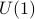

|
List of Publications (reverse chronological order)
D. Murli and Y. Yamada, Supertrace formulae for nonlinearly realized supersymmetry, JHEP 04 (2018) 112 arXiv:1803.01080
A. Karlsson, H. Luo and D. Murli, Tree amplitudes from nonlinear (super)symmetries in Volkov-Akulov theory, Phys. Rev. D93 (2018), no. 4, 045019 arXiv:1705.10339
D. Z. Freedman, R. Kallosh, D. Murli, A. Van Proeyen, and Y. Yamada, Absence of  Anomalous Superamplitudes in supergravities, JHEP 05 (2017) 067 arXiv:1703.03879
R. Kallosh, A. Karlsson, and D. Murli, Origin of Soft Limits from Nonlinear Supersymmetry in Volkov–Akulov Theory, JHEP 03 (2017) 081 arXiv:1609.09127
R. Kallosh, A. Karlsson, B. Mosk, and D. Murli, Orthogonal Nilpotent Superfields from Linear Models, JHEP 05 (2016) 082 arXiv:1603.02661
R. Kallosh, A. Karlsson, and D. Murli, From Linear to Nonlinear Supersymmetry via Functional Integration, Phys. Rev. D93 (2016), no. 2, 025012 arXiv:1511.07547
|